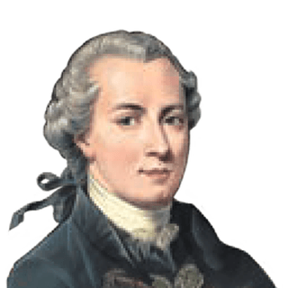
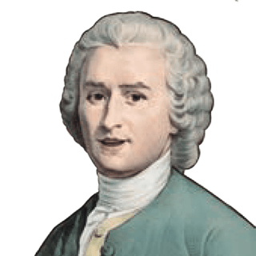
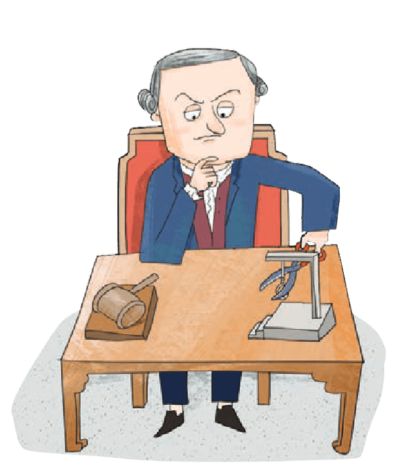
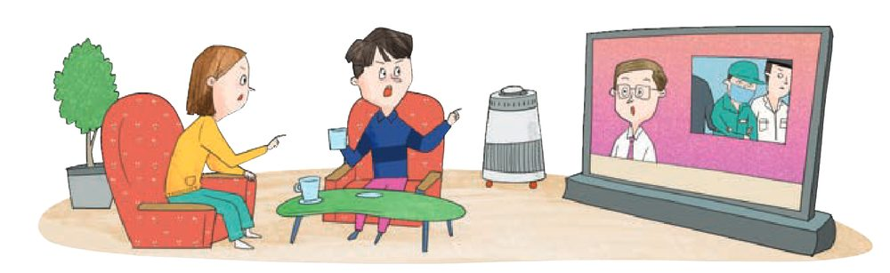
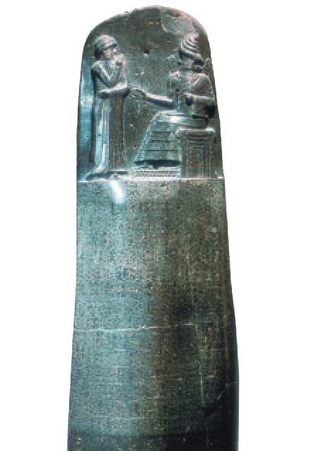
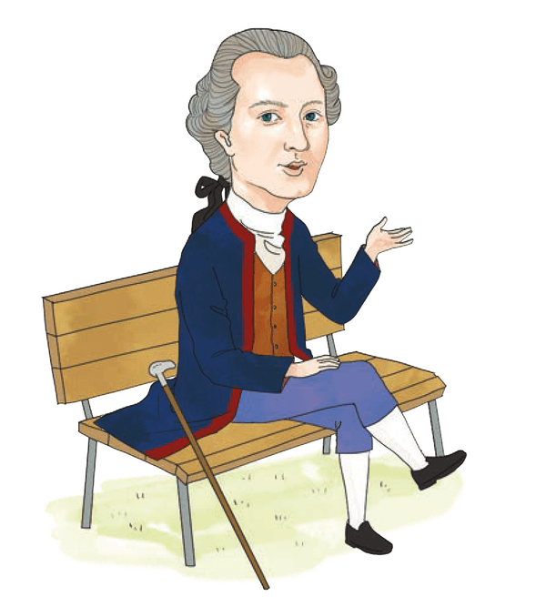

처벌은 왜 하는가?응보주의와 공리주의, 그리고 사형 제도를 둘러싼 칸트·루소·베카리아의 대화
누군가 잘못을 저질렀을 때 우리는 “벌을 받아야 한다”고 말합니다. 그런데 왜 벌을 주는가? 저지른 잘못만큼 갚기 위해서인가, 아니면 앞으로의 범죄를 막고 사회를 지키기 위해서인가? 이 질문에 대한 답에 따라, 가장 무거운 형벌인 사형에 대한 생각도 달라집니다. 차분히 하나씩 따라가 봅시다.

칸트응보주의
벤담공리주의

루소사회 계약 · 사형 찬성

베카리아사회 계약 · 사형 반대
1상황
촉법소년의 기준 나이를 낮춰야 할까?

TV 뉴스
만 13세 청소년이 법을 어겼지만, 촉법소년 제도에 따라 형사 처벌 대신 보호 처분을 받았다는 뉴스가 나왔습니다.
8910111213141516
▲ 색칠한 칸 = 촉법소년 (10세 이상 14세 미만)단위: 만 나이
📌
촉법소년 제도는 범법 행위를 한 10세 이상 14세 미만의 청소년에게 형사 처벌 대신 보호 처분을 내리는 제도입니다.
뉴스를 본 두 사람의 의견이 갈렸습니다. 내 생각과 더 가까운 말풍선을 골라 봅시다.
2교정적 정의의 의미
잘못을 바로잡는 정의, 교정적 정의
교정적 정의란?
범죄 행위에 대해 공정하게 처벌하고, 발생한 손해에 대해 합당하게 배상하도록 하여 부정의를 바로잡는 것입니다. 교정적 정의를 실현하려면 국가에 의해 제도화된 보편적 기준으로서 법이 필요합니다.

함무라비 법전 — 고대 바빌로니아 함무라비왕이 반포한 법전으로, ‘눈에는 눈, 이에는 이’라는 원칙이 기록되어 있습니다.정의의 여신 — 한 손에는 검을, 다른 손에는 저울을 들고 있습니다. 검은 법 집행의 엄격함을, 저울은 법 집행의 공정함을 상징합니다.
처벌을 바라보는 두 가지 관점
처벌과 관련된 교정적 정의에 대한 관점은 크게 두 가지로 나뉩니다. “이미 저지른 잘못”을 보느냐, “처벌이 가져올 결과”를 보느냐의 차이입니다.
응보주의 관점
대표 사상가 · 칸트
처벌이란?
범죄 행위에 상응하는 보복을 가하는 것
칸트의 주장
이성적이고 자율적인 존재인 인간은 자신의 행위에 책임을 져야 하기 때문에, 범죄 행위에 대한 대가로 응분의 처벌을 받는 것이 마땅하다.
비판
범죄 예방과 범죄자들의 교화를 소홀히 한다.
공리주의 관점
대표 사상가 · 벤담
처벌이란?
범죄 예방과 범죄자 교화를 통해 사회의 이익을 증진하는 수단
벤담의 주장 — 처벌은 ‘필요악’
처벌 그 자체는 고통을 증진하기 때문에 악하다고 볼 수 있지만, 이를 통해 사회적 이익이 증진되기 때문에 사회에 필요한 악이다.
처벌의 고통 (그 자체는 악)
<
범죄 예방 · 교화로 늘어나는 사회적 이익
비판
사회적 이익을 최우선으로 여겨 인간 존엄성을 훼손할 수 있다.
한 줄로 정리하면?
응보주의는 “잘못했으니 그만큼 벌을 받아야 한다”(과거의 범죄를 봄), 공리주의는 “벌을 주면 사회에 이익이 생기니까 벌을 준다”(미래의 결과를 봄). 그래서 응보주의는 ‘예방·교화 소홀’, 공리주의는 ‘인간 존엄성 훼손 가능’이라는 비판을 각각 받습니다.
3사형 제도에 대한 사상가의 입장
칸트 · 루소 · 베카리아는 어떻게 보았을까?
교정적 정의에서 가장 큰 형벌은 사형, 곧 국가가 범죄자의 생명을 박탈하여 사회에서 영원히 격리하는 형벌입니다. 세 사상가 모두 사형 제도에 대해 분명한 입장을 밝혔습니다. 누가 찬성하고 누가 반대했는지, 그리고 무엇을 근거로 그렇게 판단했는지에 주목해 봅시다.

칸트
사형 찬성응보주의
칸트는 살인자는 누구든 사형에 처해지지 않으면 안 된다고 보았습니다.
1동등성의 원리에 따라 살인자에 대한 사형은 정당하며, 사형 이외의 형벌은 정의에 부합하지 않는다.
2형벌은 어떤 다른 선을 촉진하기 위한 수단으로 가해져서는 안 되며, 언제나 범죄를 저질렀다는 오직 그 이유만으로 부과되어야 한다.
3사형은 살인자의 고통받는 내면적 인격을 해방하여 인간의 존엄성을 실현하는 조치이다.
“시민 사회가 모든 구성원의 동의로써 해체될 때조차도 감옥에 있는 마지막 살인자는 반드시 처형되어야 한다.”— 칸트, 『윤리 형이상학』
왜 ‘사회가 해체될 때조차도’일까?
사회가 사라지면 범죄를 예방하거나 사회를 지킬 이유도 없어집니다. 그런데도 처형해야 한다는 말은, 칸트에게 형벌의 이유가 예방이나 사회의 이익이 아니라 ‘범죄를 저질렀다는 것’ 그 자체라는 뜻입니다. 응보주의의 생각이 가장 선명하게 드러나는 문장입니다.
루소
사형 찬성사회 계약
루소는 사회 계약의 관점에서, 계약자인 시민의 생명과 안전을 확보하기 위한 사형은 정당하다고 보았습니다.
1사회 계약의 관점에서 시민의 생명과 안전을 확보하기 위한 사형은 정당하다.
2타인을 희생하여 생존하려는 살인자는 마땅히 자신의 생명을 희생해야 한다.
3법을 집행할 때 살인자는 시민이라기보다는 적으로서 간주해야 하며, 추방에 의해서나 죽음에 의해 국가로부터 분리되어야 한다. 국가의 보존은 살인자의 보존과 양립할 수 없기 때문이다.
베카리아
1738~1794사형 반대사회 계약 + 공리주의
베카리아는 처음으로 사형 제도의 폐지를 명시적으로 주장한 사상가입니다. 그는 법을 자유롭고 독립적인 사람들이 사회에서 결속하기 위해 만든 계약으로 보았고, 범죄의 경중과 균형을 이루는 형벌을 입법자가 법률로 엄격히 규정해야 한다는 죄형 법정주의를 역설했습니다. 고문을 비롯한 비인도적인 가혹한 형벌과 사형 제도의 폐지를 주장했습니다.
“국가라 할지라도 국민의 한 생명을 빼앗을 권리는 없다.”— 베카리아
1사회 계약의 관점: 사회 계약은 계약자의 생명 보존이 목적이기 때문에, 자신의 생명을 빼앗을 권능을 타인에게 양도할 자는 없다. 그러므로 살인자의 생명을 빼앗는 사형은 정당하지 않다.
2공리주의의 관점: 형벌은 타인의 범죄를 억제하기에 충분한 정도의 강도만을 가져야 한다.
3한순간에 강렬한 인상만을 주는 사형보다, 오랫동안 고통의 본보기가 되는 종신 노역형이 범죄 예방과 사회 전체 이익에 부합한다.
개념도 · 베카리아가 본 ‘강도’와 ‘지속’
사형
강도
지속
종신 노역형
강도
지속
사형은 형벌의 강도는 강하지만 지속적인 범죄 예방 효과를 지니지는 못한다 → 공리주의적 관점에서 효율성이 낮고 공익에 이바지하는 바가 적다.
『범죄와 형벌』 속 베카리아의 말
가혹한 형벌이 공익이나 의도한 목적에 어긋나지 않더라도, 그것이 범죄를 방지하지 못한다는 사실이 입증된다면, 가혹한 형벌은 개화된 이성의 결과인 계몽주의와 박애 정신에 어긋난다.
사형은 우리를 더 낫게 한 적이 없는 무익한 형벌로, 공정하고 제대로 통치되는 국가에서 실제로 유용한지 묻고 싶다. 사람이 무슨 권리로 자기 이웃의 목을 벨 수 있단 말인가. 법의 지배를 받는 정부에서는 어떤 이유로든 국민의 생명을 빼앗을 수 없다.
한 국민의 죽음은 한 가지 경우를 제외하고는 필연적일 수가 없다. 그가 자유를 박탈당하더라도 국가의 안전을 위협할 만한 충분한 힘과 조직을 보유하고 있다는 사실이 명백한 경우다. 그러나 평온한 시대에 법의 지배를 받는 정부에서는 어떤 이유로든 국민의 생명을 빼앗을 수 없다.
인간의 정신에 가장 큰 영향을 미치는 것은 고통의 강렬함이 아니라 고통이 지속되는 정도다. 우리의 감성은 폭력적이고 순간적인 충동보다 강도가 약해도 반복되는 인상에 의해 더 쉽게 그리고 더 강력하게 영향을 받기 때문이다. 범죄자의 죽음은 끔찍하지만 순간적인 광경에 지나지 않는다.— 베카리아, 『범죄와 형벌』
같은 출발점, 정반대의 결론
루소와 베카리아는 둘 다 ‘사회 계약’에서 출발합니다. 그런데 계약의 목적을 어떻게 읽느냐에 따라 결론이 갈립니다.
사회 계약사람들은 생명과 안전을 지키기 위해 계약을 맺어 국가를 이룬다
루소
계약자인 시민의 생명과 안전을 확보해야 한다
▼
타인을 희생해 생존하려는 살인자는 시민이 아니라 적이다
▼
추방이나 죽음으로 국가로부터 분리해야 한다
▼
사형 찬성
베카리아
사회 계약의 목적은 계약자의 생명 보존이다
▼
자신의 생명을 빼앗을 권능을 타인에게 양도할 자는 없다
▼
국가도 살인자의 생명을 빼앗을 권리가 없다
▼
사형 반대
🕊️
20세기 들어 인권 사상의 대두와 함께 사형 제도 폐지가 본격적으로 논의되기 시작했습니다. 최근에는 다수 국가에서 사형 제도를 폐지하는 추세이지만 아직도 일부 국가에서는 유지하고 있습니다. 사형 제도 폐지 문제는 처벌의 본질, 범죄 예방 효과, 인권 존중 등을 고려하여 신중하게 다루어져야 합니다.
4나란히 놓고 보기
세 사상가 한눈에 비교
찬성과 반대만 외우지 말고, 어떤 관점에서 그런 결론이 나왔는지 함께 기억해 둡시다.
칸트
루소
베카리아
사형 제도
찬성
찬성
반대
근거가 되는 관점
응보주의
사회 계약
사회 계약 + 공리주의
핵심 논리
형벌은 오직 범죄를 저질렀다는 이유만으로 부과되어야 하며, 살인에는 사형만이 정의에 부합한다
시민의 생명과 안전을 위해, 적이 된 살인자는 추방이나 죽음으로 국가로부터 분리해야 한다
생명을 빼앗을 권능은 양도할 수 없고, 사형보다 종신 노역형이 범죄 예방에 더 효과적이다
핵심 키워드
동등성의 원리인간 존엄성 실현
시민의 생명·안전살인자 = 적추방 또는 죽음
생명 처분권 양도 불가범죄 억제종신 노역형
대표 문장
“감옥에 있는 마지막 살인자는 반드시 처형되어야 한다.”
국가의 보존은 살인자의 보존과 양립할 수 없다.
“국가라 할지라도 국민의 한 생명을 빼앗을 권리는 없다.”
5확인 퀴즈
이 주장, 누가 했을까?
칸트 · 루소 · 베카리아 · 벤담 중 한 명을 골라 봅시다.
0 / 8 문항 · 정답 0
6흐름도
흐름으로 다시 보기
오늘 배운 내용을 처음부터 끝까지 한 번에 따라가 봅시다.
교정적 정의범죄 행위를 공정하게 처벌하고, 손해를 합당하게 배상하게 하여 부정의를 바로잡음